Fun Projects for your LEGO� MINDSTORMS� NXT!
|
|
Fun Projects for your LEGO� MINDSTORMS� NXT! |
| 4x4 Car with Joystick Control |
|

1-9
Start by building the 4x4 Chassis. Click the picture for building instructions.
|
|
10
| Attach two medium length wires (save the longest
wires for the joystick control) to the motors and route them through the
chassis as shown. |
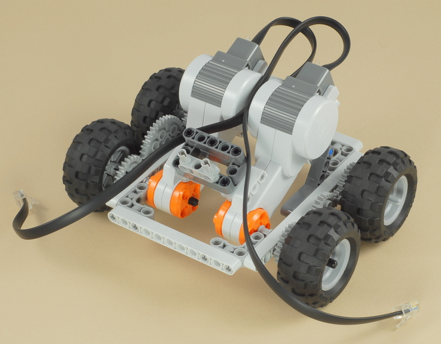
11
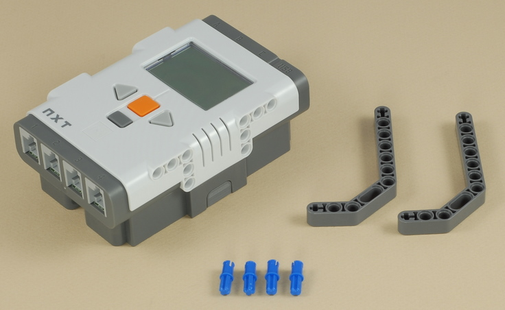
| After attaching the NXT, connect the motor wires to
ports B and C on the NXT. Make sure that the wires
do not cross (tug on them to test which is which, since they are hard to
see). When looking at the NXT brick right side up, The left side
wire should stay on the left side of the car and be connected to B,
and the right side wire should stay on the right side and be connected
to C. |
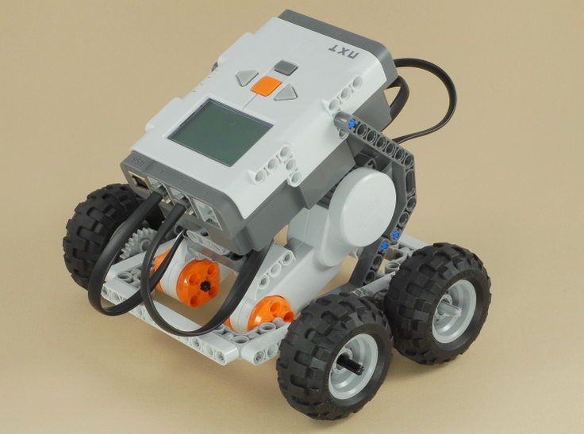
12
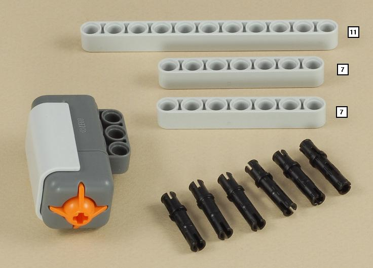
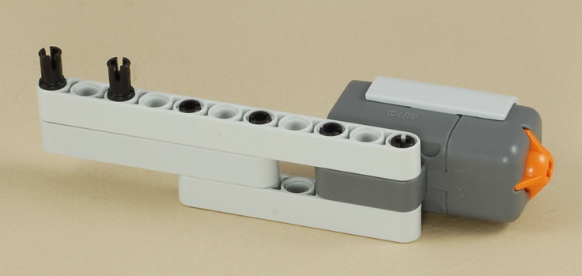
13
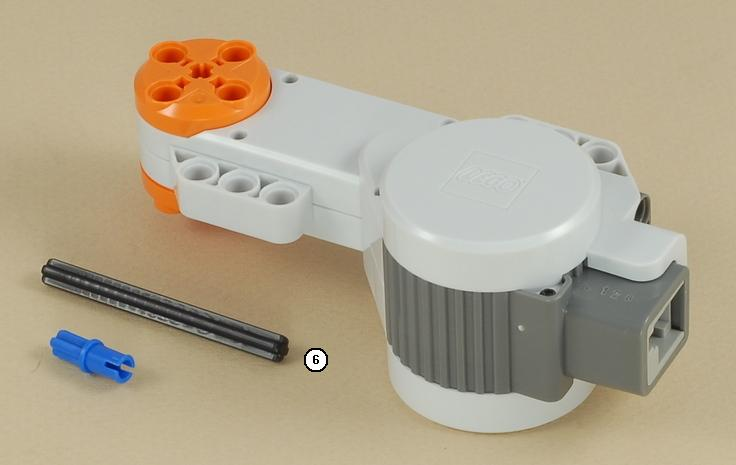
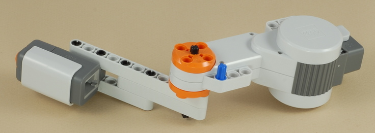
14
| Use the two longest wires in the kit to connect port
A on the NXT to the motor part of the joystick and port 1
on the NXT to the button part of the joystick. |
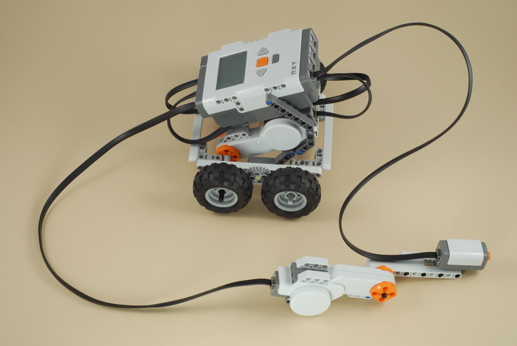
15
| Build two wire clips and use them to bundle the two
joystick control wires into a single cable. |
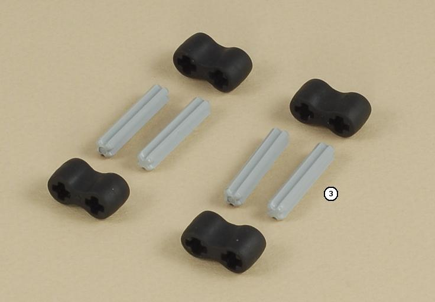

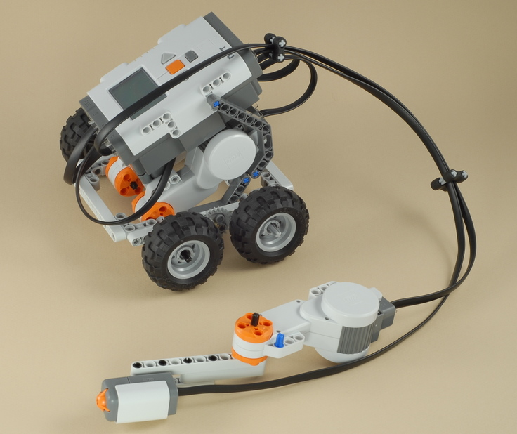
| 4x4
Car with Joystick Control Programming Use the program Joystick Drive for your 4x4 Car with Joystick Control. |
|
| 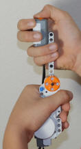 | 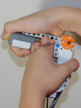 | 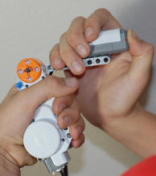 | 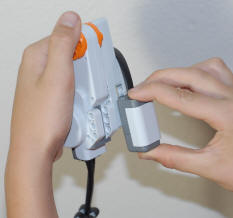 |
| Go Straight | Turn Left | Turn Right | Back up |
| Challenge
Lay out an obstacle course for your 4x4 and see how
accurately you can drive through it. The 4x4 will have pretty good
traction climbing over small obstacles, but this makes it more
challenging to drive! |
|
Copyright
�
2007-2009 by Dave Parker. All rights reserved. |